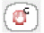

Defining Occurrence Stop Points
An occurrence stop point is a stop point on a specific path and applies only to one object in the design.
If an object has already been defined as an occurrence (an object is defined as an occurrence if it has one of the following occurrence attributes: occurrence binding, occurrence stop point, or occurrence bind-to-open), when you add a stop point, you are automatically adding it to the occurrence, not to the instance.
You can only add an occurrence stop point in the tree view of the Hierarchy Editor; you cannot add it in the table view.
Adding an Occurrence Stop Point
To add an occurrence stop point,
- Choose View – Tree to display the tree view of the configuration, if it is not already displayed.
-
Turn on the occurrence editing mode by clicking the Set bindings...on occurrence button in the toolbar:
The tree view displays Target: Occurrence. - Right-click the object on which you want to add a stop point.
- From the pop-up menu, select Add Stop Point.
The  icon (occurrence stop point icon) appears next to the occurrence. The occurrence cannot be expanded until the stop point is removed.
Removing an Occurrence Stop Point
To remove an occurrence stop point,
- Choose View – Tree to display the tree view of the configuration, if it is not already displayed.
- Right-click the occurrence.
- From the pop-up menu, select Remove Stop Point.
The occurrence stop point is removed. The icon is replaced by the leaf or folder icon. The object is no longer uniquely identified, unless it also has an occurrence binding.
Related Topics
Rules Definition at the Occurrence Level
Difference between Occurrences and Instances
Return to top